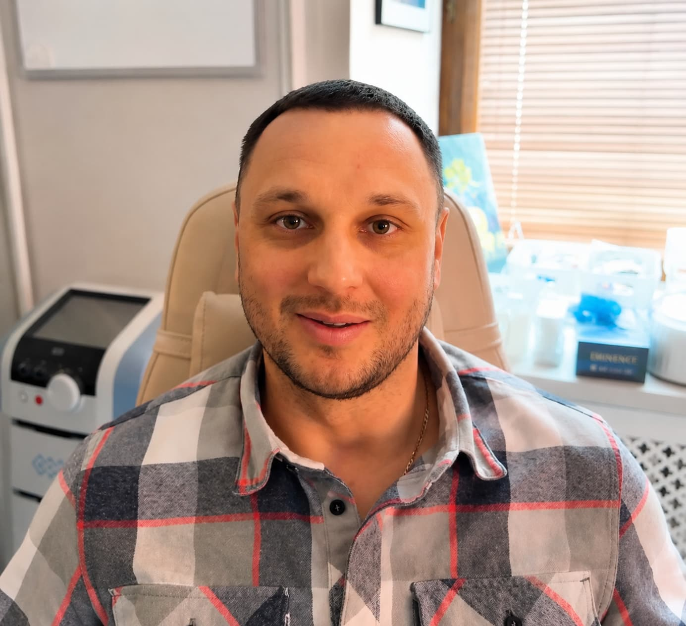

Головная боль и нарушение сна
Болевой стаж более четырех лет. Комплексная диагностика, снижение нагрузки и восстановление функции.
Обсудить похожую ситуациюПрактика и результаты
В каждом случае показаны исходная ситуация, данные диагностики, факторы выбора тактики, этапы, контрольные точки, динамика и ограничения.
Выбранные случаи
Болевой стаж более четырех лет. Комплексная диагностика, снижение нагрузки и восстановление функции.
Обсудить похожую ситуацию
Нарушение чувствительности после операции. Оценка повреждения, физиотерапия и контроль восстановления.
Обсудить похожую ситуацию
Болевой стаж более десяти лет. Междисциплинарный маршрут, стабилизация и реабилитация.
Обсудить похожую ситуациюЭтапы применения BMJO
Сопоставление жалоб, сустава, мышц и неврологического статуса.
Подключение невролога, медикаментозная и поддерживающая терапия.
Ортез и работа с мышечным напряжением.
ЛФК и физиотерапия для восстановления функции.
Оценка симптомов, сна, активности и стабильности результата.
Контрольная динамика
Отзыв пациента
«В финальной версии здесь размещается согласованный отзыв без обещаний гарантированного результата и с указанием срока наблюдения».Обезличенный отзыв · только при наличии письменного согласия
Правила публикации
Исходную ситуацию, диагностические данные, основания выбора тактики, этапы, контрольные точки, результат, срок наблюдения и ограничения.
Фото и видео, результаты исследований, измеримые показатели динамики, врачебный комментарий и согласие пациента.
Нельзя переносить результат одного случая на всех пациентов, гарантировать эффект или скрывать значимые ограничения и альтернативы.
Консультация
Оставьте контакты на BMJO или запишитесь через сайт Клиники Юдина.